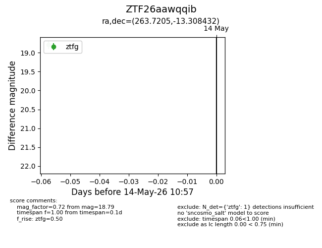
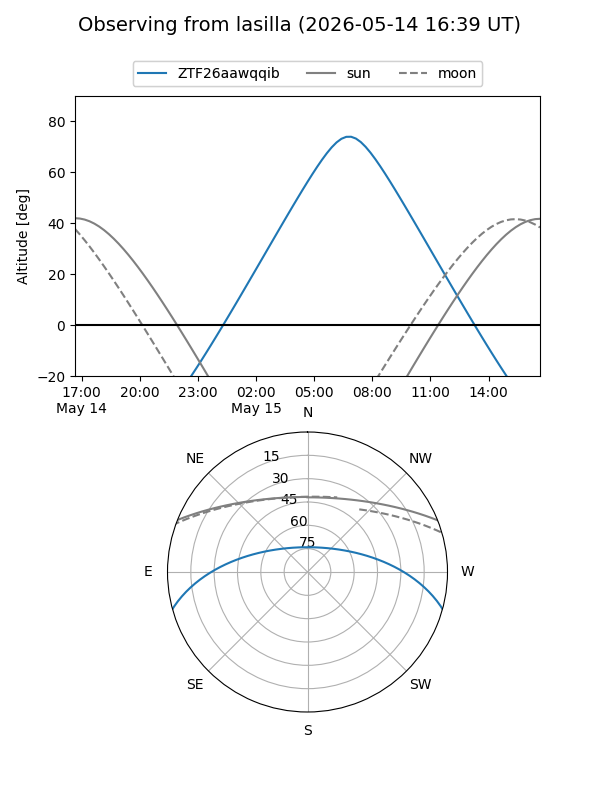
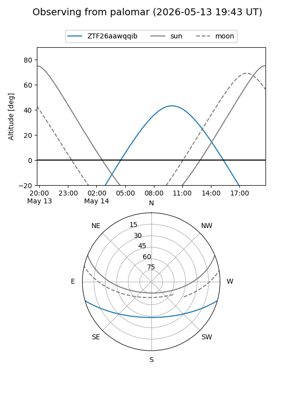

ZTF26aawqqib
Target ZTF26aawqqib at 2026-05-14 10:59
Aliases and brokers:
FINK: link
Lasair: link
ALeRCE: link
alt names
ZTF26aawqqib (ztf,fink_ztf)
Coordinates:
equatorial (ra, dec) = 263.7205,-13.30843
equatorial (HMS+DMS) = 17:34:52.93,-13:18:30.35
galactic (l, b) = (12.0708,+10.31102)
Flags:
Photometry:
last ztfg=18.79
1 ztfg detections
Lightcurve

Visibility


Additional plots